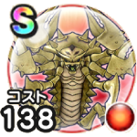

デスコピオン
ドラクエ11イベント【命の大樹編】こころ最大コスト+4スキルの斬撃・体技ダメージ+7%デイン属性斬撃・体技ダメージ+15%スキルの会心ダメージ+7%混乱耐性+7%幻惑耐性+7% / 9.5点
くわしい特徴
【ランク特殊効果】 こころ最大コスト+4スキルの斬撃・体技ダメージ+7%デイン属性斬撃・体技ダメージ+15%スキルの会心ダメージ+7%混乱耐性+7%幻惑耐性+7%

ドラクエ11イベント【命の大樹編】こころ最大コスト+4スキルの斬撃・体技ダメージ+7%デイン属性斬撃・体技ダメージ+15%スキルの会心ダメージ+7%混乱耐性+7%幻惑耐性+7% / 9.5点
【ランク特殊効果】 こころ最大コスト+4スキルの斬撃・体技ダメージ+7%デイン属性斬撃・体技ダメージ+15%スキルの会心ダメージ+7%混乱耐性+7%幻惑耐性+7%